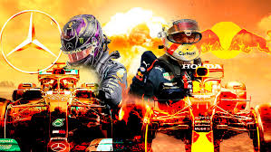
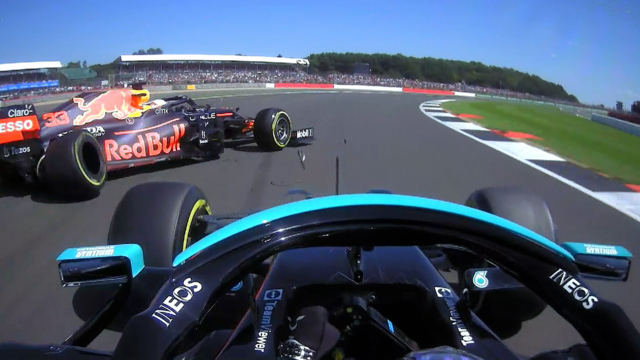
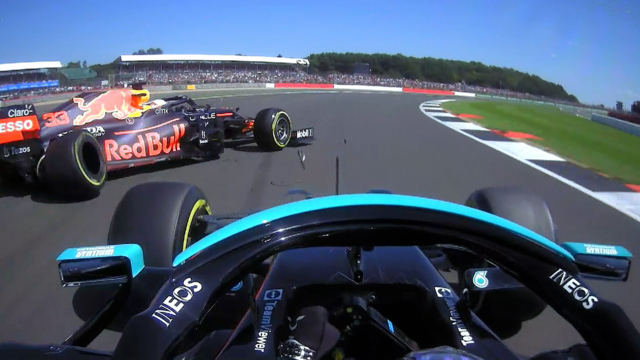

Hello there! This is a quick personal review, with no deep investigation. It also, my test page as I am learning web development. So don't take it too serious, there will be a lot of passion moments and unaccurated data, but maybe you'll agree (👍) with me on:
Reasons that I believe Mercedes and Hamilton lost the championship by themselves in the first place. Or not (👎)
For a real professional view, I really recomend you to visit Mark Hughes' article. I didn't inspired my article on his opinion. I found it while I was searching for some images. And ofcourse, I found really cool the idea to count how many points Mercedes and Hamilton has thrown away.
Ops, em portugues-BR por enquanto.
- Michael Masi
- Diretor de prova. Esse cara ganha os holofotes a partir desta corrida. Antes como um cara sendo muito mão leve, indeciso, depois com conduta duvidosa. Os audios entre equipes e eles acabam se tornando mais relevante, pois a briga começa a sair dos limites da pista e chega a um nivel político.
Primeiro GP do ano e já a primeira surpresa, Max faz a pole incontestável e sai na frente. Com a estratégia diferente de pneus, Hamilton faz o undercut
e lidera a segunda metade da corrida, mas Max tem a chance de ultrapassar Hamilton nas voltas finais, e o fez. Mas na mesma volta a RedBull manda Max
devolver a posição por possivel punição. Contrariado, Max devolve e mas devido ao desgaste dos pneus não consegue repetir a ultrapassagem.
O curioso
é que Hamilton reclama imediatamente por Max ter excedido os limites da pista, mas o mesmo o fez algumas vezes durante a corrida. Foi um bom começo pra
RedBull com uma pequena frustração, e um grande alívio para a Mercedes.

Grande Prêmio da Emília-Romana
Depois do aquecimento no Bahrein, Hamilton crava a pole como quem diz: Excuse me, aqui é o patrão.
Mas com pista molhada, perde a liderança para
Max logo na primeira curva, numa manobra bem agressiva eu diria, que poderia ter causado algum dano aos carros se Lewis não segurasse o carro. Max abriu
vantagem, e Hamilton correndo atrás do prejuízo, faz lambança sozinho ao tentar ultrapassar retardatários. Saiu da pista, ficou atolado, quebrou
a asa dianteira, teve que dar ré na brita, perdeu uma infinidade de posições.
Mas a sorte de 7x-campeão ajudou, na mesma volta Russel
bate em Bottas, safety-car, reduzindo o prejuízo, mas agora estando em 8o. Poderia ter sido muito pior.

Grande Prêmio de Portugal
Domínio da Mercedes, sem lambança, Max até tenta ponto extra mas excede os limites de pista e tem volta deletada (olha os limites de novo aí). Sorte ou erro de Max? Não contarei pontos aqui.
Grande Prêmio da Espanha
Novamente domínio da Mercedes, mas agora começam a reclamar da asa da Redbull que é flexivel demais. Mas a asa dianteira da Mercedes também... aí?
Grande Prêmio de Monaco
Fim de semana fraquíssimo da Mercedes. Hamilton, ficou onde largou. Dá pra contar algo? Se sim é culpa da equipe que não conseguiram fazer NADA.

Grande Prêmio do Azerbaijão
Essa talvez seja a maior lambança do campeonato. Perdendo no mínimo 18 pontos de graça... Magic button

Grande Prêmio da França
Aqui só digo uma coisa, companheiro, ajuda aí né?
Grande Prêmio da Estiria
Festa Laranja: Dominio absoluto da Redbull!
Grande Prêmio da Áustria
Festa Laranja: Dominio absoluto da Redbull!
Grande Prêmio da Grã-Betanha
 

Polemica: Max muito agressivo, ou Hamilton procurando um gap? Na duvida colocarei como erro de Max, sendo que ele não repetiu mais o mesmo erro. Sorte então pra Mercedes.
Na mídia: "Depois do holandês fazer umas queimações no rival, por causa da última corrida, onde ele saiu da pista numa disputa com o inglês, o pessoal da Mercedes não economizou críticas e, para incendiar mais o clima, o próprio Hamilton disse que se tiver outra situação igual “faria a mesma coisa” que fez em Silverstone. A imprensa que cobre os treinos já insinua o início de uma tremenda guerra.
Grande Prêmio da Hungria
Sabe aquela ajudinha lá? "Podedexá, entendido". Aqui não vou deixar de protestar que foi muita mas muuuuita sorte: Pra não dizer que foi roubado. Strike pegando 2 Redbull, mais o menino Norris que vem brilhando. Foi melhor que encomenda. Mas a Mercedes tb protagonizou o que foi uma largada épica de 1 carro no grid. Lambança! Custou a liderança. E por sorte Seb foi desclassificado pós-corrida (quais as chances de isso acontecer?). Preste atenção: Sorte dupla com lambança épica.

Grande Prêmio da Bélgica
Outro GP molhado, não teve corrida. Então deram, metade dos pontos. 3o lugar seria sorte ou azar? Deixemos como está.
Grande Prêmio dos Países Baixos
Casa de Max, não deu outra.
Grande Prêmio da Itália
Lembra do que aconteceu até agora? Duas feras já estão babando. Ninguém arreda o pé pra ninguém. Pois é. Só foi dada a chance de acontecer o que "faría a mesma coisa". Sorte da Mclaren!

Grande Prêmio da Rússia
Aqui faremos uma pausa na briga pelo campeonato, pois Redbull troca o motor completo de Max então ele larga do fim do grid. Dava pra imaginar uma corrida sem emoção né? Pois é, mas a Maclaren vem numa ascendente e Lando Norris brilhou. Largando na pole, o menino ficou boa parte da corrida na frente, o que parecia ser a sua primeira vitoria até que a chuva nas ultimas voltas mudou tudo. Lewis seguiu a ordem da equipe e trocou os pneus para intermediário, tendo vantagem pra caçar Norris. Arriscou, verdade? Porque Max fez o mesmo, e sendo que o mais importante não era caçar o Norris, e sim garantir que Max não o ultrapasse! Mesmo ganhando a corrida, sendo uma das mais heartbreaking, o olho tava no gato, que chegou em segundo. Não contarei como sorte aqui não, porque era dever da Mercedes tá de olho no Max.

Grande Prêmio da Turquia
Estatisticamente era pra dar Hamilton+Mercedes, mas deu Bottas, e as RedBull na sequencia. Não me lembro, preciso ver o VT. Não contarei pontos, mas curioso.
Grande Prêmio dos Estados Unidos
Grande festa pra Hamilton e seus amigos celebridades... mas Verstapen jogou água no Chopp. Outra na contra-tendencia.
Grande Prêmio da Cidade do México
Grande festa pra Checo! mas foi Verstapen quem levou, com Hamilton em segundo. A tequila foi garantida pelo podio de Checco.
Grande Prêmio de São Paulo
Hamilton troca só o módulo de combustão e tem velocidade nas retas 15km/h a mais que o resto. Bom com puniçao de posições, largando em décimo não deu tempo pra escalar pra vitoria da Sprint Race, mesmo assim teve um excelente resultado se não fosse pela irregularidade na asa. A desqualificação da Sprint, multa pra Max por ter tocado na asa traseira, papinho pra boi dormir da Mercedes alegando que Max poderia ter quebrado o mecanismo. Bom, a Mercedes ficou doida, o Tio (Toto) tava on fire. Na corrida, com muito mais voltas, Hamilton foi escalando o pelotão até chegar em Max, que se você leu até aqui, não ia de jeito nenhum arredar o pé. Levou a disputa pra fora das pistas onde Hamilton começou a ficar assustado, mas fez a lição de casa e passou "lacrando", ou seja, não dando chance pra Max retomar a posição. Lewis entendeu, é só assim mesmo. Foi tão duro o final de semana pra Hamilton que sua comemoração foi digna de Senna'93 (sim, 93 com invasão de pista e não a de 91). Gostei da comemoração, acho que ele "devia" isso ao público, coisa que Max nunca faria, pelo menos não neste momento.

Grande Prêmio do Catar
Super motor de Hamilton continuou dominando. Sem surpresas.
Grande Prêmio da Arábia Saudita
Pior circuito da temporada na minha opinião. Um minhocão estreito sem propósito que até atrapalha na filmagem do evento. Super motor de Hamilton continuou dominando. Mas com surpresas, com Max jogando tudo literalmente pra cima de Hamilton. Diversas punições para o holandês. Enfim, Bottas ajuda o companheiro, mas não na pista e sim segurando Max atrás durante o safety car. A malandragem se vira contra a propria Mercedes. Sorte da RedBull aqui com uma bandeira vermelha. Mas nem isso impediu mais uma vitória do ingles. E o campeonato fica empatado em pontos, com Max tendo 1 vitória a mais de vantagem.

Grande Prêmio de Abu Dhabi
Última corrida do ano mega holofotes nessa disputa. E agora? Supermotor de Hamilton contra a agressividade de Verstapen. Houve uma disputa de posição logo na largada, Max mais uma vez força Lewis pra fora, que corta a chincane e não devolve a vantagem de distancia. Com os pneus macios se desgastando volta a volta a corrida vai ficando pra Hamilton, que nessa corrida foi impecavel. Nem Checco Perez segurando Hamilton pos 5,5s numa unica volta, foi épico, deu chance a Verstapen. Até o acidente de Latifi, safety car na pista. Posso estar ficando louco, safety car na pista sem realinhamento de posições? Acredito que o erro maior foi o Masi não ter permitido o realinhamento logo nos primeiros momentos de safety car. E a Mercedes porque não trocou os pneus de Hamilton? Essa é a penalização por estar na frente, não saber o que os de trás irão fazer... acho que não tinha como. Mesmo. Era só esperar a corrida terminar com o SC... por isso o desespero no radio. Agora me diz, com tanta sorte desperdiçada durante o campeonato, tanto mimimi da equipe mais vencedora da era Híbrida... vai me dizer que perderam na última volta? Tropeçaram nas orelhas o campeonato inteiro. Bottas nunca ofereceu resistencia à Verstapen, mesmo marcando mais pontos que Checco e tirando pontos de Verstapen, não tem como dizer que brigou pelo time. Hamilton no ano, sofreu com Verstapen, com Checco, com Alonso, com Norris, retardatários. Acho que não teve tantos rivais preparados nos anos anteriores. Queria ver Rosberg não se aposentando. Aquele 1o título, que era pra ser do Massa, tb foi culpa da Ferrari o ano todo tropeçando. Eu gosto do Hamilton, mas ele tá deixando de lado o esporte pra lutar por uma causa que pode ser nobre, mas não é o esporte. E a Mercedes pra mim ganha o troféu MIMIMI, reclamou de tudo e o tempo todo... ao contrário da Redbull que além de saber como seguir as regras, se antecipava negociando com o controle de prova, mas nunca retrucando ou fingindo demencia. Claro que o que a Liberty TV mostra pode ter sido só uma parte.

| Matemática da temporada | 2021 |
|---|---|
| Lambança da Mercedes / Lewis | 5 |
| Sorte a favor da Mercedes / Lewis | 5 |
| Pontos potencialmente perdidos | 39 |
| Pontos potencialmente favorecidos | 14 | 53 pontos! pra não chorar no última volta |